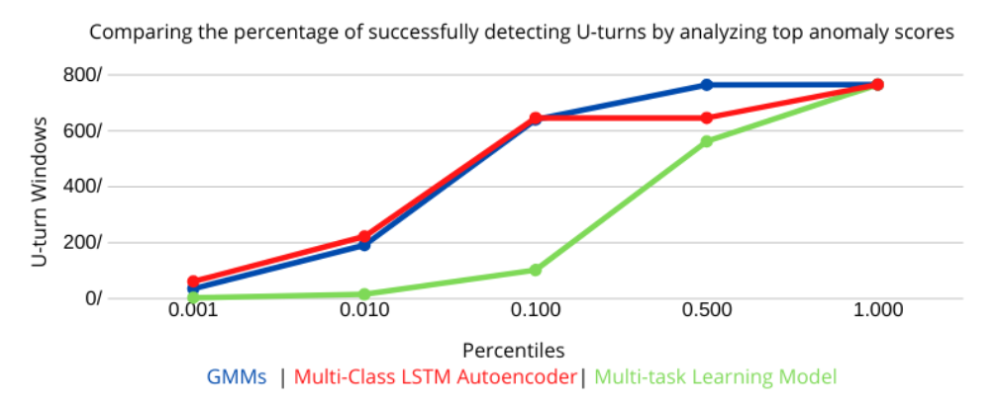

Research

Anomaly Detection Algorithm for Autonomous Driving Vehicles
Cyber-Physical Systems Lab at Rutgers University
March 2020 - May 2020
- Researched with Dr. Dario Pompili to create an algorithm to detect anomalous data in autonomous vehicles
- Utilized Gaussian Mixture Model (GMM) anomaly detection method to sort and classify data in specific categories
- Tested resultant data against Multi-Class LSTM Autoencoder and Multi-task Learning Model and concluded GMM produced the most accurate result that consistently found and sorted all anomalies with test and real data